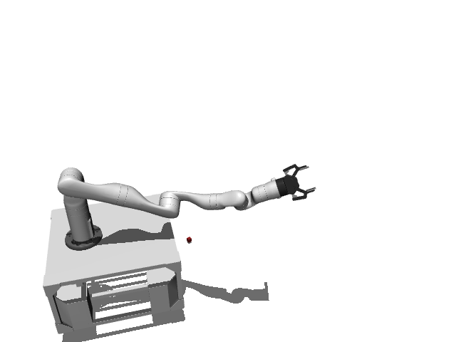

prbench/TidyBot3D-base_motion-o1-v0
Random Actions
Initial State Distribution
Environment Group Description
A 3D mobile manipulation environment using the TidyBot platform. The robot has a holonomic mobile base and a Kinova Gen3 arm. The base must reach a target pose.
Variant Description
There is always one target position.
Observation Space
The entries of an array in this Box space correspond to the following object features:
| Index | Object | Feature |
|---|---|---|
| 0 | cube1 | x |
| 1 | cube1 | y |
| 2 | cube1 | z |
| 3 | cube1 | qw |
| 4 | cube1 | qx |
| 5 | cube1 | qy |
| 6 | cube1 | qz |
| 7 | cube1 | vx |
| 8 | cube1 | vy |
| 9 | cube1 | vz |
| 10 | cube1 | wx |
| 11 | cube1 | wy |
| 12 | cube1 | wz |
| 13 | cube1 | bb_x |
| 14 | cube1 | bb_y |
| 15 | cube1 | bb_z |
| 16 | robot | pos_base_x |
| 17 | robot | pos_base_y |
| 18 | robot | pos_base_rot |
| 19 | robot | pos_arm_joint1 |
| 20 | robot | pos_arm_joint2 |
| 21 | robot | pos_arm_joint3 |
| 22 | robot | pos_arm_joint4 |
| 23 | robot | pos_arm_joint5 |
| 24 | robot | pos_arm_joint6 |
| 25 | robot | pos_arm_joint7 |
| 26 | robot | pos_gripper |
| 27 | robot | vel_base_x |
| 28 | robot | vel_base_y |
| 29 | robot | vel_base_rot |
| 30 | robot | vel_arm_joint1 |
| 31 | robot | vel_arm_joint2 |
| 32 | robot | vel_arm_joint3 |
| 33 | robot | vel_arm_joint4 |
| 34 | robot | vel_arm_joint5 |
| 35 | robot | vel_arm_joint6 |
| 36 | robot | vel_arm_joint7 |
| 37 | robot | vel_gripper |
Action Space
Actions: base_pose (3), arm_pos (3), arm_quat (4), gripper_pos (1)
Rewards
Currently returns a small negative reward (-0.01) until the goal is reached.
References
TidyBot++: An Open-Source Holonomic Mobile Manipulator for Robot Learning - Jimmy Wu, William Chong, Robert Holmberg, Aaditya Prasad, Yihuai Gao, Oussama Khatib, Shuran Song, Szymon Rusinkiewicz, Jeannette Bohg - Conference on Robot Learning (CoRL), 2024
https://github.com/tidybot2/tidybot2